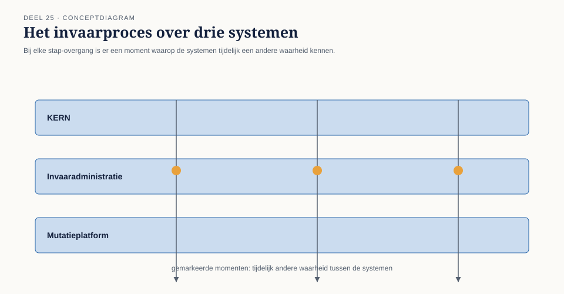

Deel 25 — Consequenties van bounded contexts voor consistentie: eventual consistency en sagas, conceptueel
Reader · Ductus-cursus Domain-Driven Design · niveau 3 (expert) · deel 25 van 30
25.1 Waar dit deel over gaat
Vera’s slotopmerking in deel 24 stelt de vraag die dit deel beantwoordt: zodra een landschap uit meerdere bounded contexts bestaat — door ontwerp, zoals bij Meridiaan sinds niveau 2, of door sanering, zoals bij KERN sinds deel 24 — verdwijnt een garantie die binnen één systeem vaak onopgemerkt aanwezig was: dat alles, op elk moment, hetzelfde weet. Eén database, één transactie, één moment van waarheid. Zodra een deelnemersmutatie het Mutatieplatform, KERN en straks de invaaradministratie tegelijk raakt, en die drie niet meer in één technische transactie samenvallen, moet het team een vraag beantwoorden die het tot nu toe zelden expliciet hoefde te stellen: welke consistentiegarantie heb je nog, en welke niet?
Dit deel behandelt die vraag conceptueel — vanuit het domeinperspectief, niet vanuit de techniek. Twee begrippen dragen het: eventual consistency, het idee dat verschillende delen van een landschap tijdelijk een andere waarheid mogen kennen, zolang ze uiteindelijk, na een eindige tijd, weer samenvallen; en de saga, een reeks stappen over meerdere bounded contexts heen die, als één van de stappen faalt, wordt teruggedraaid met compenserende stappen in plaats van met een technische rollback. Hóe je dat implementeert — welke berichtenqueue, welk protocol, welke opslagvorm — is geen DDD-vraag en blijft voor de database- en architectuurcursus. Wélke garantie je als domein nog nodig hebt, en wélke je kunt missen, is dat wel.
Aan het eind van dit deel kun je:
- uitleggen waarom een bounded context grens ook een consistentiegrens is, en wat dat concreet betekent voor wat je nog wel en niet in één keer kunt garanderen;
- het onderscheid tussen strikte consistentie en eventual consistency toepassen op een concrete domeinsituatie, en beoordelen welke van de twee een gegeven proces nodig heeft;
- een saga als domeinconcept beschrijven — de stappen, de compensaties, en waar de verantwoordelijkheid voor “het uiteindelijk goed laten komen” ligt;
- met de garantiekaart vaststellen welke consistentiegarantie een relatie tussen twee contexts nodig heeft, en wat er gebeurt als die garantie tijdelijk niet geldt.
25.2 De casus: Otto’s aanname
Uit het casusdossier: Otto Feenstra is developer op het Mutatieplatform, pragmatisch en ongeduldig — de stem die in dit niveau het hardst aandringt op snelle, technische oplossingen.
De sessie waarin het team de daadwerkelijke invaaroperatie voor het eerst technisch doordenkt, begint met een aanname die niemand hardop heeft gecontroleerd. Otto tekent op het bord hoe hij zich de invaaroperatie voorstelt: één grote, nachtelijke batch die per deelnemer het Mutatieplatform, KERN en de nieuwe invaaradministratie in één doorloop bijwerkt. “We zetten alles even stil, draaien de batch, en zetten het weer aan. Dan is alles op hetzelfde moment consistent.”
Daan, die de omvang inmiddels beter kent dan Otto, twijfelt hardop: “Voor hoeveel deelnemers werkt dat binnen één nacht?” Otto’s antwoord komt sneller dan zijn zekerheid rechtvaardigt: “Voor een deel. Voor de rest draaien we het over een paar nachten uit.” Foppe, die tot dan toe zwijgt, stelt de vraag die de rest van de sessie draagt: “En in de nachten ertussen — wat weet het Mutatieplatform dan over een deelnemer die al wel is ingevaren in KERN, maar nog niet in de invaaradministratie?”
Otto’s stilte duurt lang genoeg om zichtbaar te worden. Vera vult aan, met de ervaring van deel 24 nog vers: “Dat is precies de vraag die we bij de sanering ook tegenkwamen. Zodra iets in stukken gebeurt, is er een moment waarop niet alles hetzelfde weet. De vraag is niet of dat gebeurt — dat gebeurt sowieso. De vraag is: hoe erg is dat, en wat doen we eraan?”
Otto, later tegen Foppe: “Ik dacht dat ‘consistent’ een ding is dat je hebt of niet hebt. Ik wist niet dat het een vraag is die je per situatie opnieuw moet stellen.”

25.3 Waarom een bounded context grens ook een consistentiegrens is
Binnen één bounded context — en, scherper nog, binnen één aggregate, zoals niveau 1 deel 6 introduceerde — kan een systeem garanderen dat een wijziging in één keer, volledig of helemaal niet, wordt doorgevoerd: een technische transactie zorgt daarvoor. Zodra een proces de grens van een bounded context oversteekt, geldt die garantie niet meer vanzelf. Twee contexts hebben, per definitie, elk hun eigen model, vaak hun eigen opslag, en vaak hun eigen team dat erover beslist wanneer een wijziging wordt doorgevoerd. Er is geen technische transactie die zich over beide uitstrekt zonder de contexts zo strak aan elkaar te koppelen dat de grens die niveau 2 juist zorgvuldig trok, weer verdwijnt.
Dat is geen gebrek dat je met genoeg techniek kunt wegontwerpen — het is een rechtstreeks gevolg van de keuze om contexts te scheiden. Een context map met zeven relatiepatronen (niveau 2, deel 13-14) is ook een kaart van waar consistentie ophoudt vanzelfsprekend te zijn en een expliciete keuze wordt. Wie contexts scheidt om ze onafhankelijk te kunnen laten evolueren — de reden waarom niveau 2 die grenzen trok — accepteert daarmee ook dat “alles weet op elk moment hetzelfde” niet langer een garantie is die je gratis krijgt.
Dat inzicht keert, dichter bij huis dan Otto besefte, ook terug bij de sanering uit deel 24: zolang een strangler-fig-migratie loopt, weten het oude en het nieuwe deel van KERN tijdelijk niet hetzelfde over dezelfde deelnemer. Sanering en landschapsontwerp stellen, op verschillende schaal, dezelfde vraag.

25.4 Eventual consistency: wat je wint, en wat je opgeeft
Eventual consistency is geen technische noodgreep die je toestaat om slordig te zijn — het is een expliciete, bewuste keuze: verschillende delen van een landschap mogen tijdelijk een andere waarheid kennen, zolang er een gegarandeerd eindpunt is waarop ze weer samenvallen, en zolang het domein die tussentijd kan verdragen.
Twee vragen bepalen of eventual consistency voor een gegeven proces aanvaardbaar is:
Kan het domein de tussentijd verdragen? Bij de dagelijkse mutatieketen kan het: een adreswijziging die in het Mutatieplatform is verwerkt maar nog een paar minuten niet in Wegwijzer zichtbaar is, veroorzaakt zelden onherstelbare schade — de deelnemer ziet het morgen wel. Bij het invaren zelf ligt dat scherper: een deelnemer die in KERN al is ingevaren, maar in de invaaradministratie nog als “niet ingevaren” te boek staat, mag in die tussentijd geen tegenstrijdige actie ondervinden — bijvoorbeeld een oude en een nieuwe aanspraak allebei uitgekeerd krijgen. Het domein bepaalt of de tussentijd onschuldig is of gevaarlijk; de techniek bepaalt alleen hóe lang die tussentijd duurt.
Is er een gegarandeerd, eindig moment waarop consistentie wordt hersteld? Eventual consistency zonder een aantoonbaar eindpunt is geen ontwerpkeuze meer, maar een risico zonder naam. Voor het implementatieplan bij DNB is dit punt niet triviaal: “uiteindelijk consistent” moet aantoonbaar “binnen een bekende, begrensde tijd consistent” betekenen, niet “ooit, hopelijk.”
Waar deze twee vragen “nee” of “onzeker” opleveren, is eventual consistency niet de juiste keuze voor dát specifieke proces — ook al is ze elders in hetzelfde landschap, voor een ander proces, volstrekt gepast. Dit is precies waar Otto’s oorspronkelijke aanname faalde: hij behandelde consistentie als één eigenschap van het hele invaarproces, in plaats van een vraag die per stap opnieuw moet worden gesteld.

25.5 Sagas: hoe je een proces over meerdere contexts heen laat slagen — of eerlijk laat mislukken
Een saga is een reeks stappen die, samen, één zakelijk doel bereiken maar die zich over meerdere bounded contexts uitstrekken en dus niet in één technische transactie passen. Elke stap wordt uitgevoerd binnen zijn eigen context, onder zijn eigen consistentiegarantie. Het bijzondere zit niet in hoe de stappen worden uitgevoerd — dat is techniek — maar in wat er gebeurt als een stap halverwege mislukt.
Binnen één transactie is de reactie op een fout eenvoudig: alles terugdraaien, alsof er niets is gebeurd. Over contexts heen kan dat niet zomaar: de eerdere stappen zijn al, binnen hún context, definitief afgerond en zichtbaar geworden — een deelnemer is al ingevaren in KERN, een bericht is al naar de invaaradministratie verstuurd. Terugdraaien betekent hier niet “doen alsof het niet gebeurd is,” maar een compenserende stap: een nieuwe, expliciete actie die het effect van de eerdere stap ongedaan maakt of corrigeert, uitgevoerd binnen dezelfde discipline als de oorspronkelijke stap.
Dat heeft een directe domeinconsequentie die vaak wordt onderschat: een compenserende stap is zelf een domeinbeslissing, geen technisch trucje. “Een deelnemer terugzetten naar de oude regeling nadat de invaarstap in KERN al is voltooid, maar de stap in de invaaradministratie is mislukt” is niet hetzelfde als “de wijziging is nooit gebeurd” — het is een nieuwe gebeurtenis, met een eigen betekenis, die zelf onder de aandacht van DNB, van de deelnemer, en mogelijk van de actuaris kan vallen. Wie een saga ontwerpt zonder de compensaties als volwaardige domeingebeurtenissen te behandelen, verbergt een deel van wat er werkelijk gebeurt.
Twee vragen horen bij elke saga-stap, en zijn domeinvragen, geen technische:
Is deze stap compenseerbaar, en tegen welke prijs? Sommige stappen zijn eenvoudig terug te draaien; andere — een brief die al naar een deelnemer is verstuurd, een uitkering die al is overgemaakt — zijn dat niet, of alleen tegen een prijs die het domein moet afwegen, niet de techniek.
Wie ziet, en wanneer, dat een compensatie heeft plaatsgevonden? Een saga die stil corrigeert zonder dat iemand — de deelnemer, de toezichthouder, het bestuur — het merkt, is niet automatisch acceptabel, ook niet als het technisch “werkt.” Zichtbaarheid van een compensatie is zelf een domeinbeslissing.
Sagas zijn, samengevat, niet een technische vervanging van een transactie die over contexts heen niet meer bestaat — ze zijn een expliciete manier om te ontwerpen wat er gebeurt als een proces dat meerdere teams, modellen en systemen raakt, halverwege misgaat. De implementatievorm — georkestreerd door een centrale coördinator, of gecoördineerd door de contexts zelf via gebeurtenissen — is precies het detailniveau dat voor de database- en architectuurcursus is voorbehouden.

25.6 De garantiekaart
De garantiekaart is het instrument van dit deel: per relatie tussen twee contexts — of, zoals bij de sanering uit deel 24, tussen een oud en een nieuw deel van hetzelfde systeem — leg je vast welke consistentiegarantie daar geldt, en wat er gebeurt als die tijdelijk niet klopt.
Veld 1 — Welke garantie geldt hier: strikt, of eventueel?
Voor de relatie die je onder de loep neemt: kan en moet dit in één technische transactie worden gegarandeerd (meestal alleen mogelijk binnen één context, vaak binnen één aggregate), of aanvaard je hier bewust een tussentijd waarin beide kanten tijdelijk iets anders weten?
Veld 2 — Hoe lang mag die tussentijd duren, aantoonbaar?
Geen vage belofte (“snel”, “meestal binnen een dag”), maar een bekende, begrensde tijd — het verschil tussen een ontwerpkeuze en een risico zonder naam, zoals §25.4 al aangaf.
Veld 3 — Wat gebeurt er als een stap in die tussentijd mislukt?
Is er een compenserende stap nodig (saga), en zo ja: is die stap compenseerbaar, tegen welke prijs, en wie ziet dat de compensatie heeft plaatsgevonden?
Veld 4 — Het veld dat het verschil maakt: is de tussentijd voor de deelnemer onzichtbaar, of merkbaar en schadelijk?
Dit is de vraag die uiteindelijk bepaalt of een gekozen garantie verdedigbaar is, niet alleen technisch haalbaar. Een adreswijziging die een paar minuten vertraagd zichtbaar wordt, is voor de deelnemer onzichtbaar en onschuldig. Een deelnemer die tijdelijk tussen twee regelingen in hangt, zonder dat iemand hem dat vertelt, is merkbaar en potentieel schadelijk — ook als de techniek “binnen de afgesproken tijd” consistent wordt. De garantiekaart dwingt die twee categorieën uit elkaar te houden, en de tweede categorie nooit stilzwijgend te accepteren.

25.7 Terug naar de casus
Otto, Daan, Vera en Foppe vullen de garantiekaart in voor de kern van het invaarproces: de relatie tussen KERN (waar de aanspraak feitelijk wordt omgezet), de invaaradministratie (waar het resultaat wordt vastgelegd voor het implementatieplan) en het Mutatieplatform (waar lopende mutaties van dezelfde deelnemer nog kunnen binnenkomen).
Veld 1: strikte consistentie binnen elke stap zelf (de omzetting in KERN is atomair, per deelnemer), eventual consistency tussen de stappen. Veld 2: het team stelt, na een korte toets bij de actuariële afdeling, dat de tussentijd tussen een KERN-omzetting en de registratie in de invaaradministratie maximaal enkele uren mag duren, nooit een volledige nacht — een grens die het team expliciet vastlegt, niet aanneemt.
Veld 3 legt het probleem bloot waar Otto’s oorspronkelijke aanname aan voorbijging: als de registratie in de invaaradministratie mislukt nádat KERN de omzetting al heeft voltooid, is de compenserende stap niet “doe alsof het niet gebeurd is” — de omzetting in KERN staat er al. De compensatie is een expliciete correctieboeking, zichtbaar in de deelnemersdossierhistorie, met een eigen datum en reden. Vera merkt op: “Dat is precies zo’n gebeurtenis die, als hij vaak genoeg voorkomt, DNB gaat vragen waarom.” Foppe voegt toe: “Dan is het antwoord niet ‘dat gebeurt bijna nooit’ — het antwoord is ‘en dit is precies wat we doen als het wél gebeurt, en waarom dat verdedigbaar is.’”
Bij veld 4 wordt de kernvraag scherp: mag een deelnemer, in de uren tussen de KERN-omzetting en de registratie, een actie ondernemen — bijvoorbeeld een waardeoverdracht aanvragen — die uitgaat van de oude situatie terwijl de nieuwe al feitelijk is doorgevoerd? Het team concludeert dat dat merkbaar en potentieel schadelijk is, en besluit dat het Mutatieplatform, voor precies dít type actie, tijdens de tussentijd een tijdelijke blokkade zet in plaats van door te gaan op verouderde informatie — een expliciete domeinkeuze, geen technisch bijverschijnsel.
Otto, aan het eind van de sessie: “Ik dacht dat een saga een technisch patroon was om iets te laten werken dat anders niet zou werken. Nu snap ik dat het net zo goed gaat over wat we een deelnemer wél en niet mogen laten merken van iets dat wij, achter de schermen, nog aan het rechtbreien zijn.” Iris, die de laatste tien minuten van de sessie meeluistert, stelt één aanvullende vraag, die ze zonder verdere toelichting laat staan: “En als straks een tweede bron van deelnemersmutaties bij dit landschap komt — met haar eigen tempo, haar eigen systemen — geldt deze garantiekaart dan nog, of moeten we hem opnieuw invullen?” Niemand in de kamer weet op dat moment dat de vraag minder hypothetisch is dan hij klinkt.
25.8 Vooruitblik
Dit deel heeft de consequenties van bounded contexts voor consistentie conceptueel behandeld: welke garantie een context-grens nog wél biedt, welke niet, en hoe een saga een proces over contexts heen eerlijk laat slagen of eerlijk laat mislukken. De technische uitwerking — hoe je eventual consistency en sagas daadwerkelijk implementeert — blijft voorbehouden aan de database- en architectuurcursus. Deel 26 keert terug naar het strategische spoor van dit niveau: hoe bewaak je een domeinmodel dat door meerdere teams wordt gedragen tegen taal-drift over de tijd — een vraag die, zoals Iris’ slotvraag in dit deel al liet doorschemeren, een nieuwe urgentie krijgt zodra het Meridiaan-landschap niet langer het enige landschap is waarmee dit team te maken heeft.